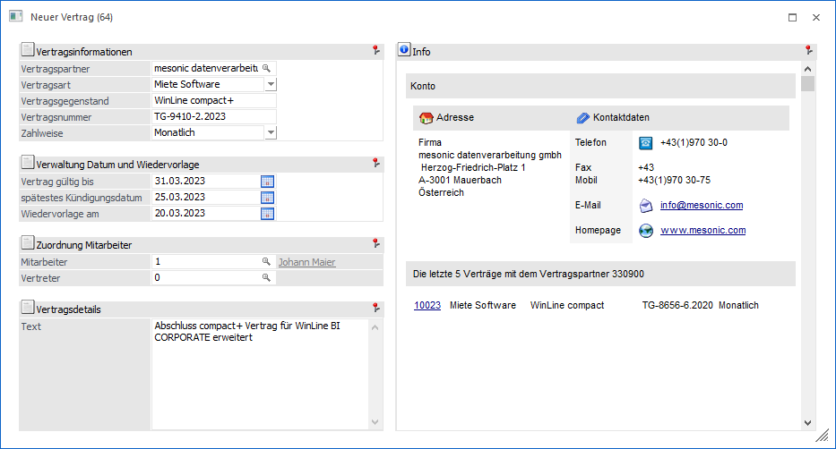
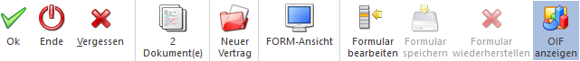

Wenn das Erfassen einer CRM Aktion, eines CRM Workflows oder eines CRM Folgeschritts ausgelöst wird öffnet sich das Fenster "Workflow erfassen".
Hinweis
Der Inhalt des Fensters ist abhängig von der Vorlage, welche im Workflow Editor definiert wurden.

In den entsprechenden Feldern können die gewünschten Angaben getätigt werden. Uploads können bereits beim Erfassen eines neuen CRM Falls per Drag & Drop hinzugefügt werden, wobei im Ribbon die Anzahl der bereits hinzugefügten Uploads angezeigt wird.
Buttons

Ø Ok
Durch Drücken des Buttons "Ok" bzw. der Taste F5 wird der Eintrag abgeschlossen und der Schritt geschrieben.
Ø Ende
Mit dem Button "Ende" bzw. der Taste ESC wird das Fenster geschlossen und alle Angaben verworfen.
Ø Vergessen
Durch Drücken des Buttons "Vergessen" werden alle Eingaben, die im Fenster gemacht wurden, wieder zurückgesetzt (alle Felder werden geleert).
Ø Dokument(e)
Wenn ein Upload per Drag & Drop hinzugefügt wurde, wird dieser Info-Button aktiv und die Anzahl der Uploads wird angezeigt. Durch Anklicken des Buttons wird das Fenster Workflow - Dokumente geöffnet.
Ø Wechsel
An dieser Stelle kann, in Abhängigkeit des zu erfassenden Falls, ein Wechsel der CRM Aktion, des CRM Workflowstartpunkts oder des Workflowfolgeschritts durchgeführt werden. Bei diesem Wechsel bleiben alle bereits erfasst Informationen erhalten.
Ø FORM-Ansicht
Mit Hilfe dieses Buttons kann die sogenannte "FORM-Ansicht" aktiviert werden. Im Gegensatz zur klassischen Eingabe unterstützt diese folgende Funktionen:
ü Lese- und Bearbeitungsmodus
ü Responsive HTML-Design
ü Erweiterte Layout-Komponenten
Hinweis
Die FORM-Ansicht basiert immer auf der Definition des individuellen Formulars. Die Gestaltung des Layouts kann wiederum in der WinLine INFO über den Menüpunkt "FORM - Designer" erfolgen.
Ø Formular bearbeiten
Durch Anwahl des Buttons "Formular bearbeiten" wird das ausgewählte Formular (d.h. die Vorlage) in einen Bearbeitungsmodus versetzt (Felder können verschoben, entfernt oder neue einfügt werden). Durch eine erneute Anwahl des Buttons wird der Modus wieder verlassen.
Hinweis
Der Button kann nur angewählt werden, wenn das Objektrecht "bearbeiten" (oder höher) für das individuelle Formular vorhanden ist.
Ø Formular speichern
Mit Hilfe dieses Buttons können vorgenommene Formularänderungen gespeichert werden.
Ø Formular wiederherstellen
Wenn Formularänderungen getätigt wurden, dann kann durch Anwahl des Buttons "Formular wiederherstellen" das ursprüngliche Formular wiederhergestellt werden.
Ø OIF anzeigen
Mit Hilfe dieses Buttons kann der OIF-Bereich im rechten Bereich des Fensters aktiviert bzw. deaktiviert werden.
Hinweis
Eine Aktivierung ist nur möglich, wenn in der Vorlage die Option "OIF anzeigen" aktiviert wurde.